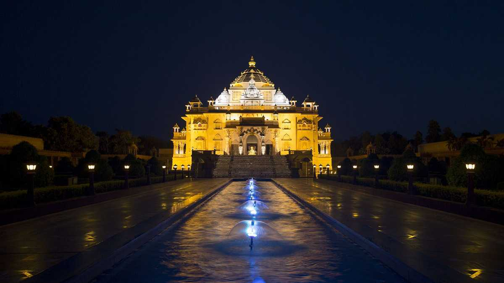
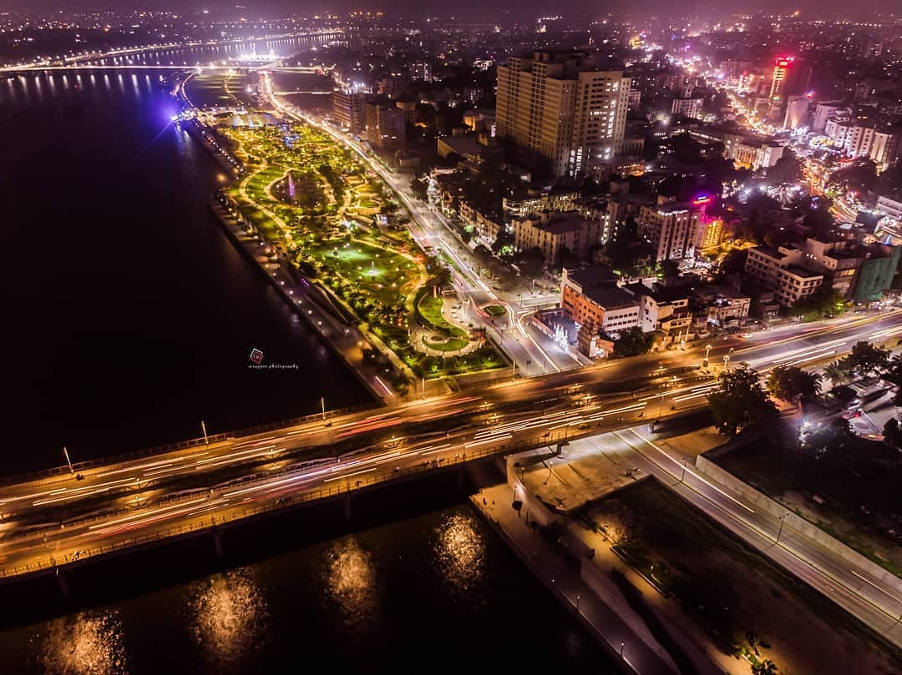
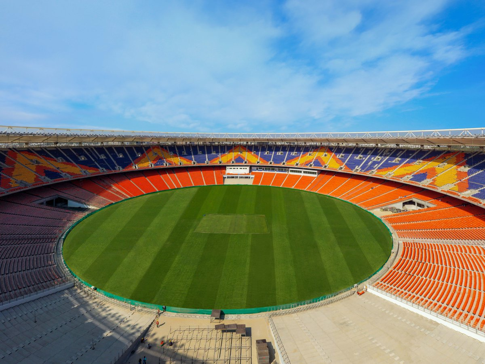
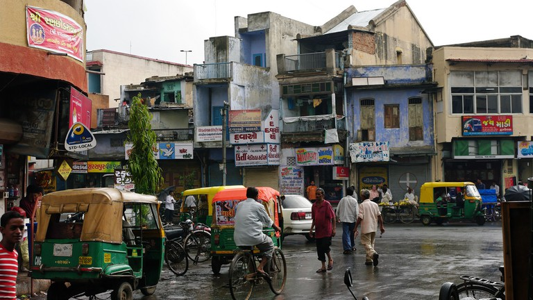

About Ahmedabad
History
Ahmedabad is the largest city of Gujarat, India. Ahmedabad was named after Ahmed Shah in 1411. Ahmed Shah was the ruler of Ahmedabad.It population is about 6 million, which is two times the population of Toronto. What Toronto is to Canada, Ahmedabad is to India. Ahemdabad is a key contributor to India's businesses, economy, and technology sectors. The languages spoken in Ahmedabad are English, Gujarati and Hindi. Tourists are able to find tour guides who are billingual to make their experience better. Ahmedabad has attracted many known figures. In fact, Donald Trump visited Ahmedabad for the inaugaration of The Motera Stadium in February 2020. Ahmedabad attracts many tourists each year and has a lot of great attractions for couples, families and kids. To learn more about Ahemdabad, click here.
Visuals
- 
-

- 
- 
- 